Innlogging
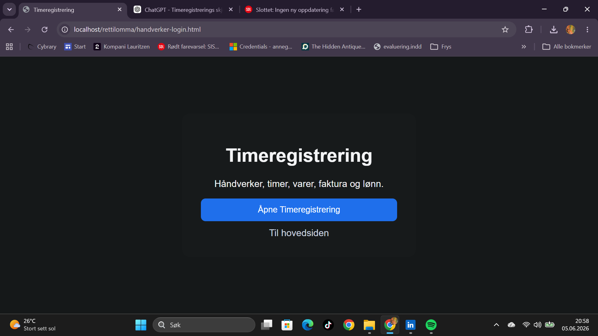
Brukeren logger inn med e-post og passord. Vanlige brukere sendes til en enkel arbeidsflate.
Kommentar: Dette bildet hører til kapittelet over og viser hva administrator eller bruker faktisk skal gjøre.
Oppsett og drift i riktig rekkefølge: moduler først, deretter adminoppsett, ansatte, kunder, timer, lager, faktura, økonomi og backup.
Rett i Lomma er modulbasert. Kunden skal bare få de modulene de faktisk trenger. En liten ENK kan starte enkelt, mens en håndverkerbedrift kan legge til biler, varer, lager og lønn når behovet kommer.
Timer, kunder og enkel faktura.
Timer, jobber, varer, biler, Min bil, lager og faktura.
Timer, prosjekter og faktura uten bil-lager.
Full pakke med lønn, lager, økonomi og backup.
Administrator logger inn for å åpne admin-konsollen. Admin-konsollen er hovedinngangen til oppsett, moduler, firma, ansatte, kunder, faktura, lager, lønn og backup.

Brukeren logger inn med e-post og passord. Vanlige brukere sendes til en enkel arbeidsflate.
Kommentar: Dette bildet hører til kapittelet over og viser hva administrator eller bruker faktisk skal gjøre.
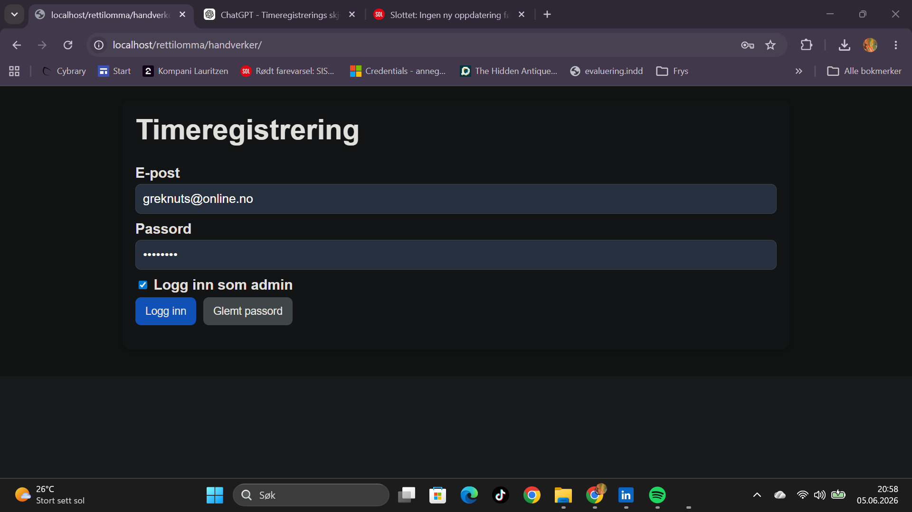
Administrator kan velge adminmodus ved innlogging. Dette åpner funksjoner som vanlige brukere ikke skal se.
Kommentar: Dette bildet hører til kapittelet over og viser hva administrator eller bruker faktisk skal gjøre.
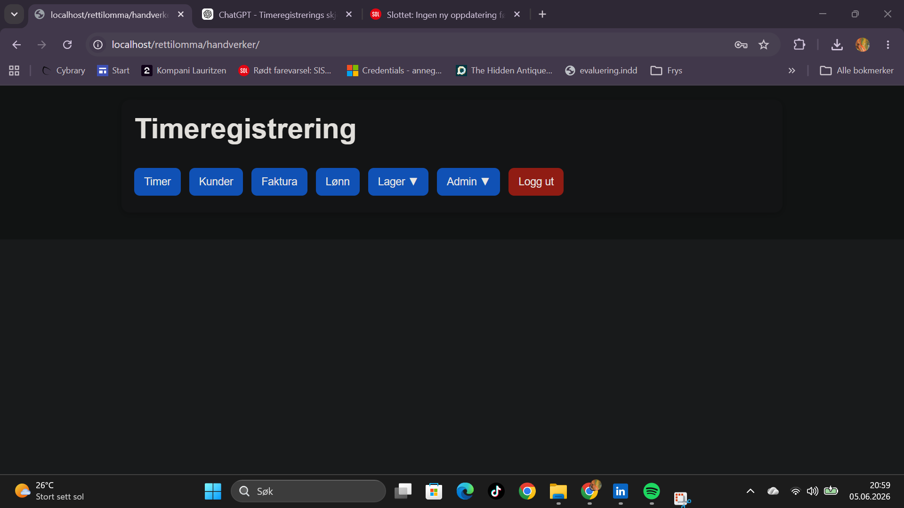
Admin-konsollen er navet for oppsett og vedlikehold. Herfra kan administrator gå videre til moduler, firma, ansatte, kunder, faktura, lager, lønn, backup og testpanel.
Kommentar: Dette bør vises tidlig i dokumentasjonen, fordi administrator først må forstå hvor hovedstyringen ligger.
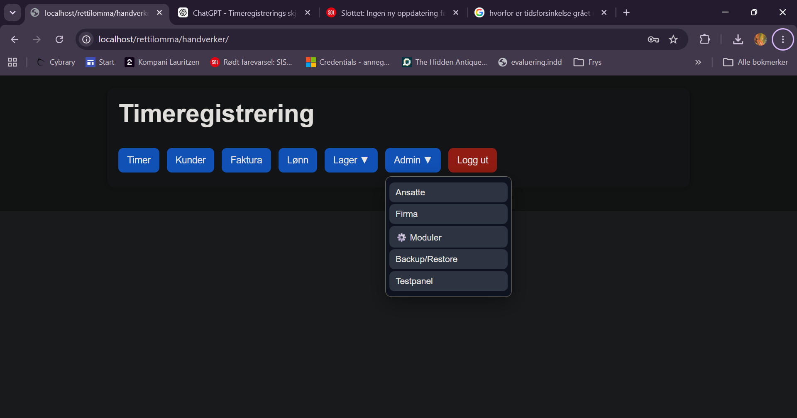
Adminvalg brukes for å skille mellom vanlig bruk og administrasjon. En administrator kan jobbe som vanlig bruker, eller åpne adminmodus når systemet skal settes opp eller vedlikeholdes.
Kommentar: Dette bildet forklarer rolleforskjellen mellom enkel daglig bruk og administrasjon.
Firmaoppsettet bør gjøres tidlig. Informasjonen brukes på fakturaer, dokumenter og betalingsinformasjon.
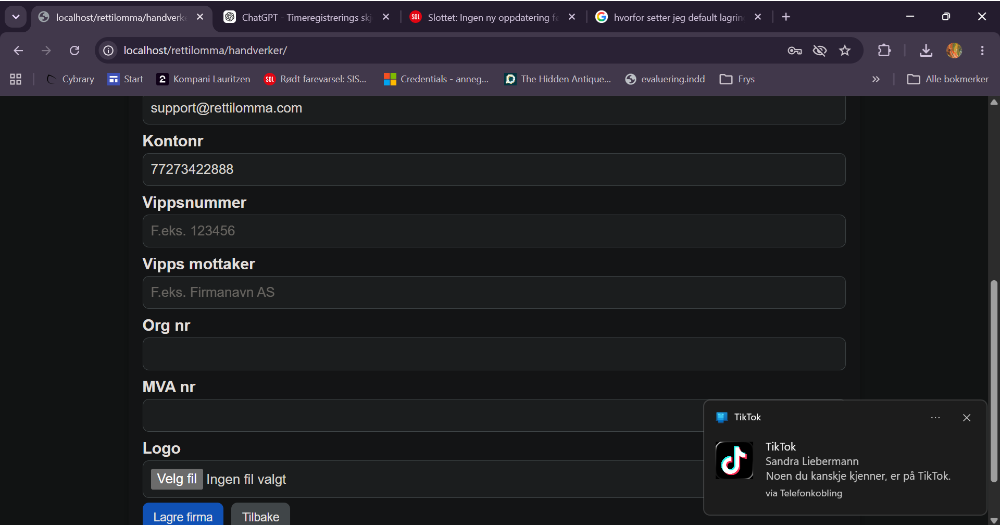
Legg inn firmanavn, adresse, organisasjonsnummer, kontonummer, Vipps og logo.
Kommentar: Dette bildet hører til kapittelet over og viser hva administrator eller bruker faktisk skal gjøre.
Ansatte får tilgang etter rolle. Vanlige brukere får en enklere visning, mens administrator kan åpne administrasjonsfunksjonene.
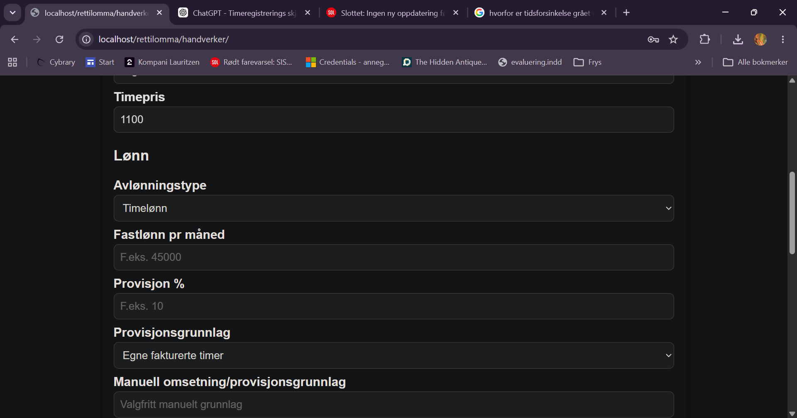
Her registreres ansatte med navn, e-post, rolle og lønnsinformasjon.
Kommentar: Dette bildet hører til kapittelet over og viser hva administrator eller bruker faktisk skal gjøre.
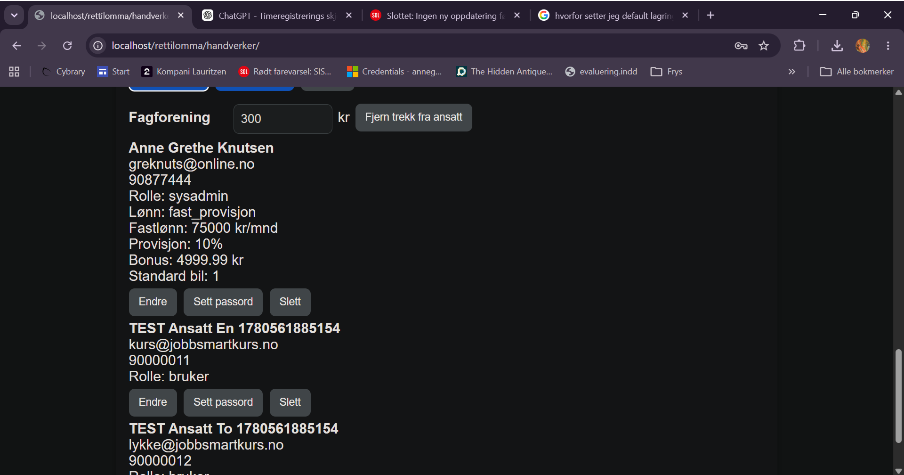
Brukes for å korrigere eller oppdatere opplysninger på en ansatt.
Kommentar: Dette bildet hører til kapittelet over og viser hva administrator eller bruker faktisk skal gjøre.
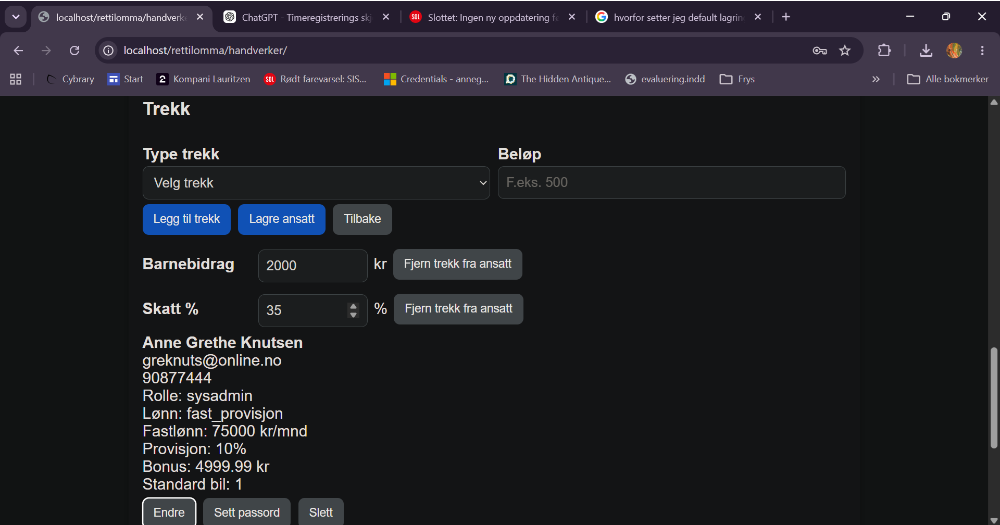
Flere felt for lønn, trekk og administrasjon kan settes her.
Kommentar: Dette bildet hører til kapittelet over og viser hva administrator eller bruker faktisk skal gjøre.
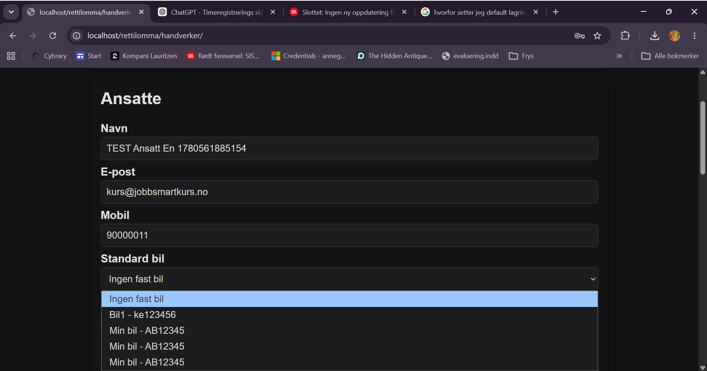
En ansatt kan kobles til fast bil. Da vet systemet hvilken bil varer skal trekkes fra.
Kommentar: Dette bildet hører til kapittelet over og viser hva administrator eller bruker faktisk skal gjøre.
Lønn er en modul. Kunder som ikke trenger lønn skal ikke forstyrres av disse valgene.
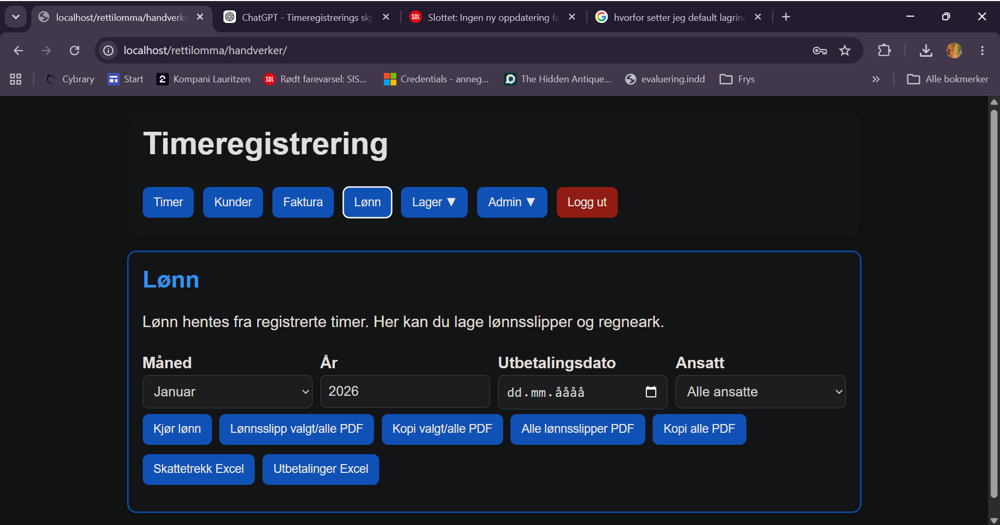
Lønn hentes fra registrerte timer og ansattoppsett.
Kommentar: Dette bildet hører til kapittelet over og viser hva administrator eller bruker faktisk skal gjøre.
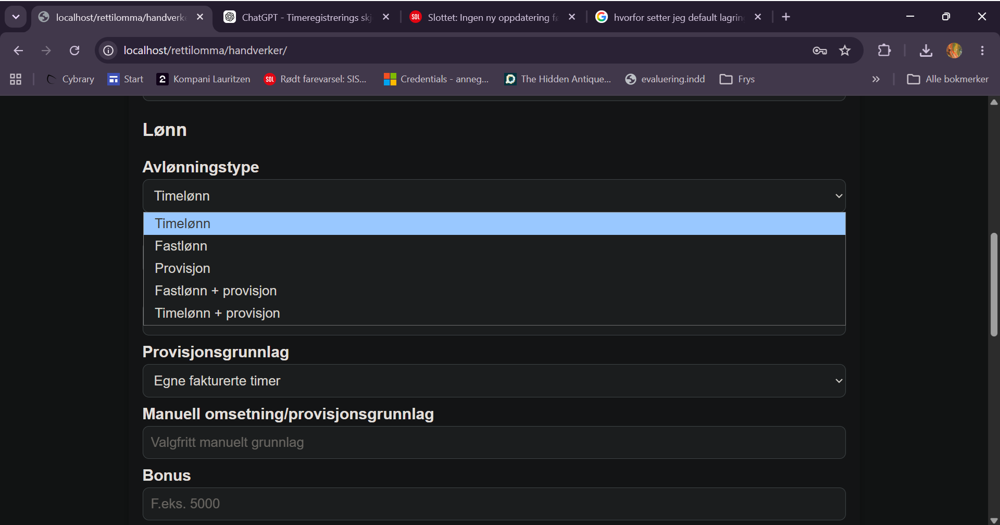
Velg fastlønn, timelønn eller andre lønnstyper etter behov.
Kommentar: Dette bildet hører til kapittelet over og viser hva administrator eller bruker faktisk skal gjøre.
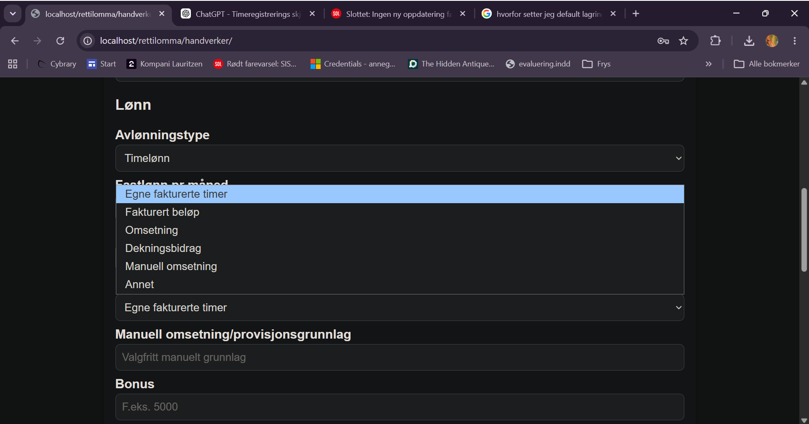
Provisjon kan brukes for ansatte som skal ha prosent eller bonus etter avtalt grunnlag.
Kommentar: Dette bildet hører til kapittelet over og viser hva administrator eller bruker faktisk skal gjøre.
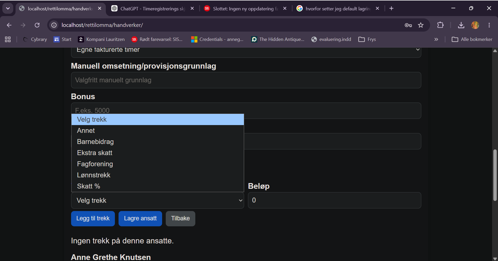
Trekk kan brukes til skatt, ekstra trekk, lønnstrekk eller andre faste trekk.
Kommentar: Dette bildet hører til kapittelet over og viser hva administrator eller bruker faktisk skal gjøre.
Kunder og prosjekter er grunnlaget for timer, jobber og faktura.
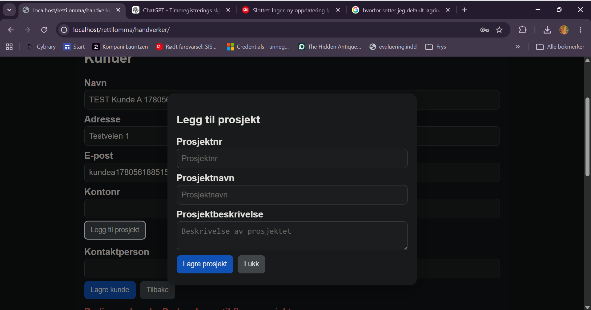
Koble prosjekter til kunder slik at timer og faktura havner riktig.
Kommentar: Dette bildet hører til kapittelet over og viser hva administrator eller bruker faktisk skal gjøre.
Timer og jobber er den daglige arbeidsflaten. Her registreres arbeid, tid, kunde, prosjekt, utlegg, bilder og eventuelle varer.
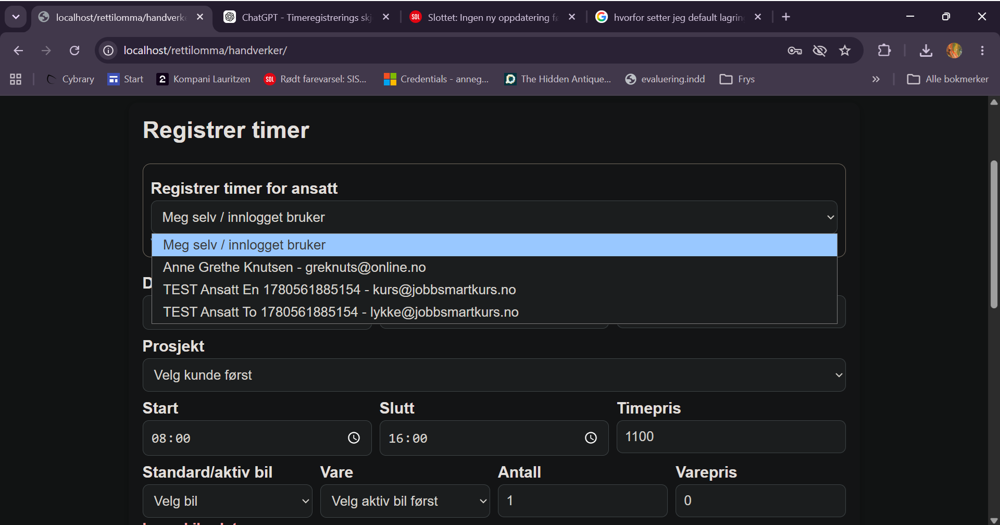
Administrator kan se og registrere timer bredere enn en vanlig bruker.
Kommentar: Dette bildet hører til kapittelet over og viser hva administrator eller bruker faktisk skal gjøre.
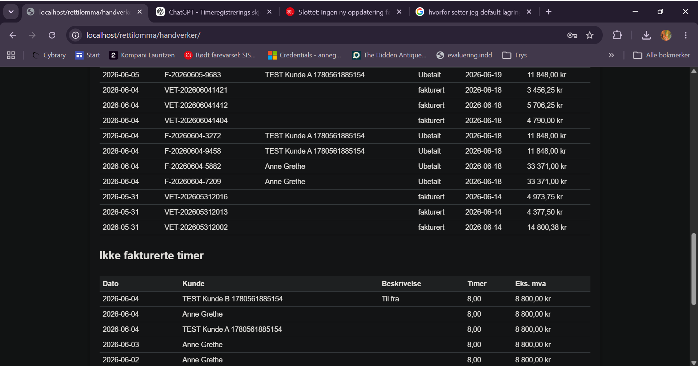
Oversikten gjør det enklere å følge opp hva som er gjort og hva som skal faktureres.
Kommentar: Dette bildet hører til kapittelet over og viser hva administrator eller bruker faktisk skal gjøre.
Lager og biler er mest relevant for håndverkere. Vanlige brukere bør normalt bare se Min bil, mens administrator styrer hovedlager, vareregister og fylling av biler.
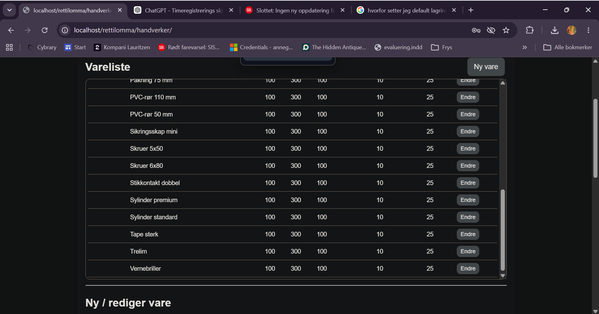
Hovedregister for varer, varenummer, pris, MVA og beholdning.
Kommentar: Dette bildet hører til kapittelet over og viser hva administrator eller bruker faktisk skal gjøre.
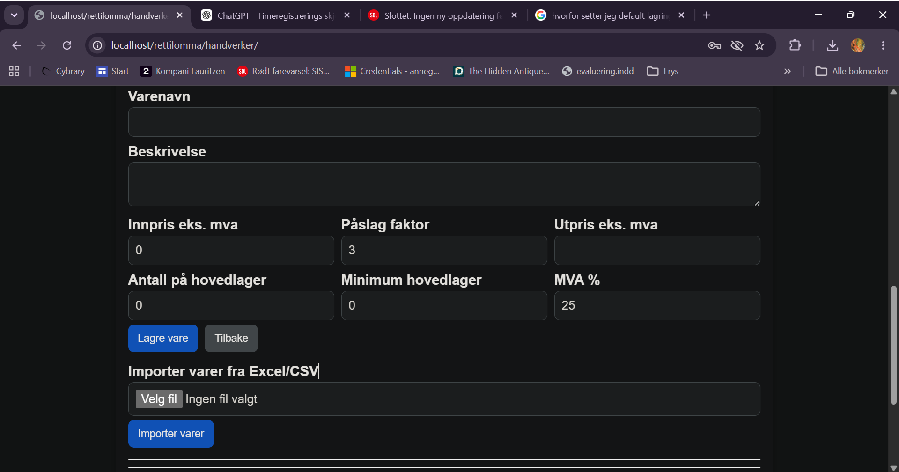
Administrator kan legge inn nye varer eller redigere eksisterende varer.
Kommentar: Dette bildet hører til kapittelet over og viser hva administrator eller bruker faktisk skal gjøre.
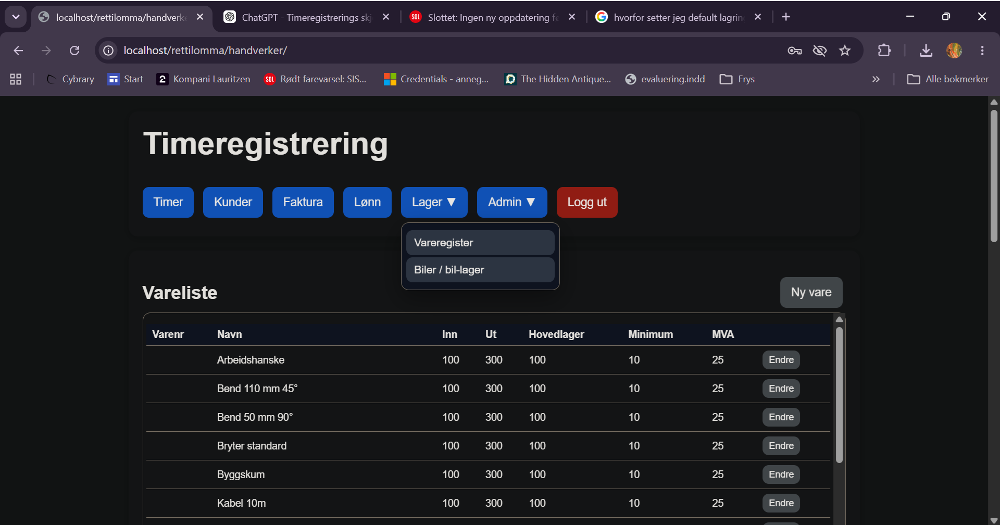
Viser sammenhengen mellom hovedlager og bil-lager.
Kommentar: Dette bildet hører til kapittelet over og viser hva administrator eller bruker faktisk skal gjøre.
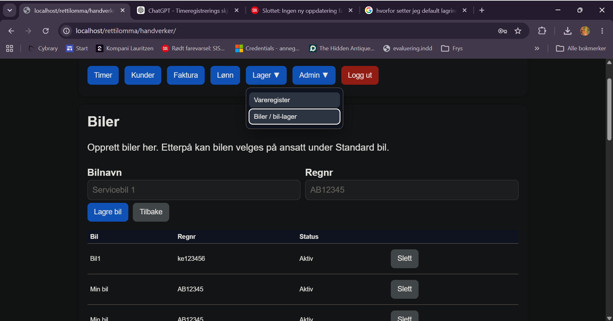
Her opprettes og vedlikeholdes firmabiler.
Kommentar: Dette bildet hører til kapittelet over og viser hva administrator eller bruker faktisk skal gjøre.
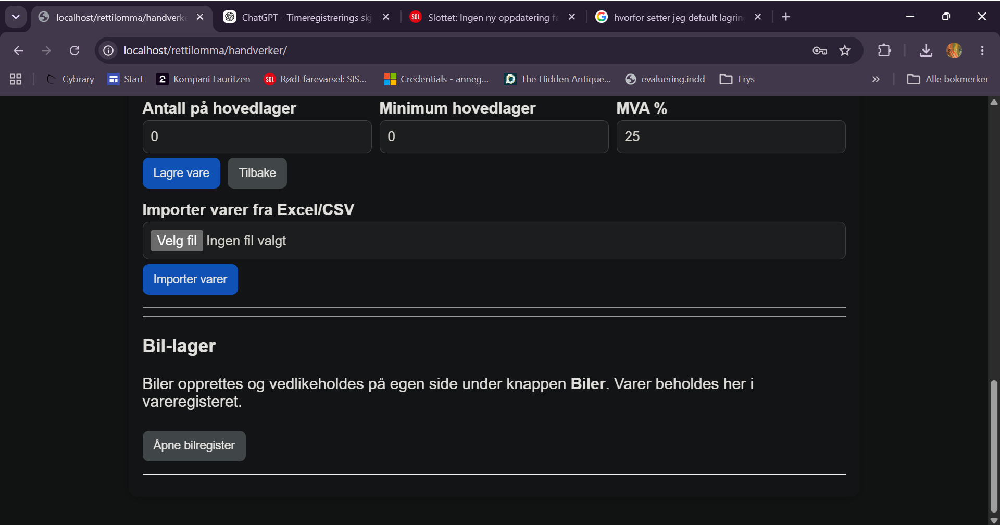
Brukes for å velge hvilken bil som skal kontrolleres eller fylles.
Kommentar: Dette bildet hører til kapittelet over og viser hva administrator eller bruker faktisk skal gjøre.
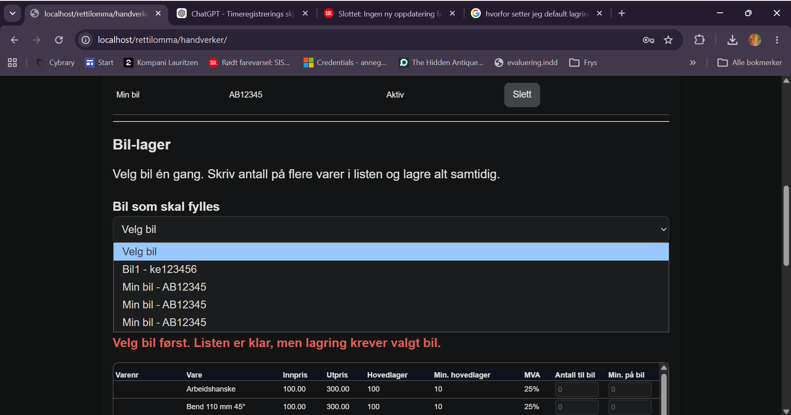
Administrator kan fylle bil fra vareregister. Bevegelsen kan logges med ansatt, bil, vare, antall og tidspunkt.
Kommentar: Dette bildet hører til kapittelet over og viser hva administrator eller bruker faktisk skal gjøre.
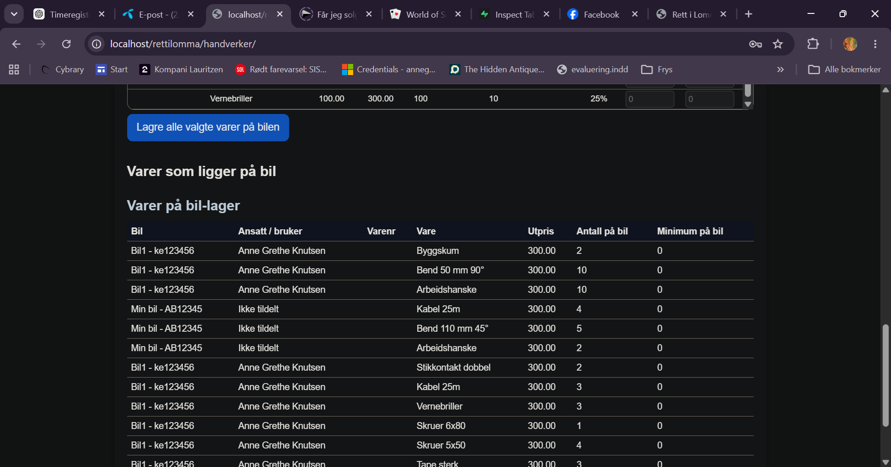
Dette bildet viser bil-lageret med bil, ansatt/bruker, vare, antall og minimum på bil. Administrator kan dermed se hvem som har hvilken bil, og hvilke varer som ligger på bilen.
Kommentar: Denne oversikten er nyttig ved lagerkontroll, fylling av biler og oppfølging av materiell. Den viser også hvorfor det er viktig å koble ansatt til standard bil.
Når timer, varer og utlegg er registrert, kan administrator lage faktura og følge opp økonomien.
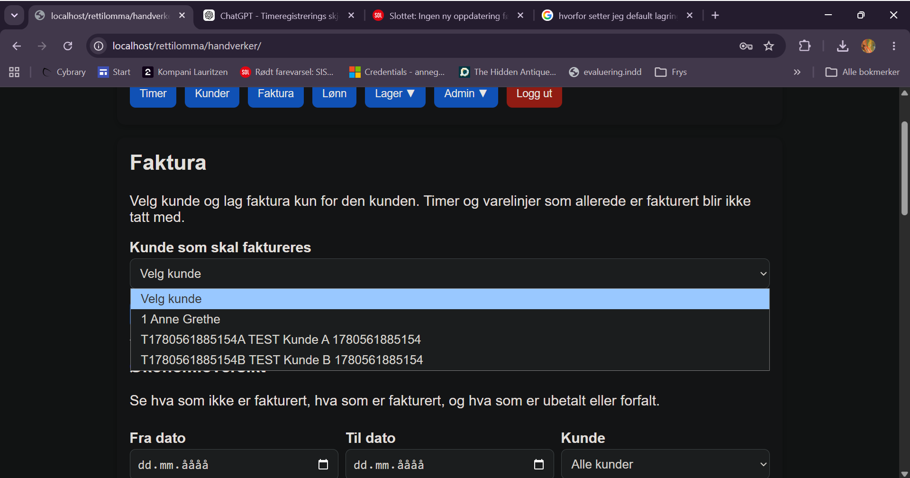
Lag faktura, fakturakopi, kreditnota og purring fra registrert grunnlag.
Kommentar: Dette bildet hører til kapittelet over og viser hva administrator eller bruker faktisk skal gjøre.
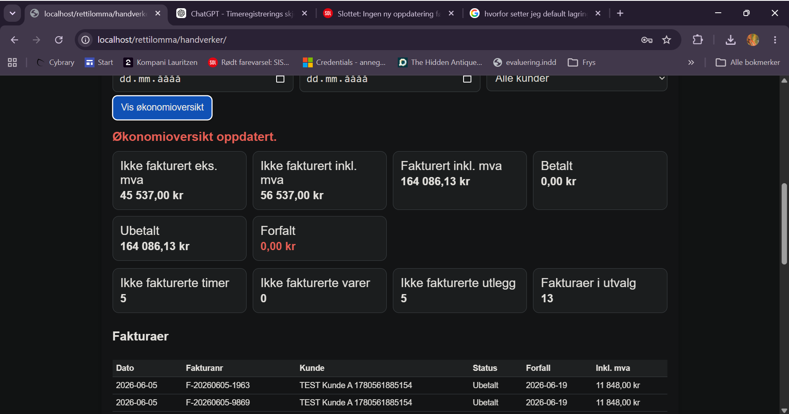
Se hva som er fakturert, ikke fakturert, ubetalt eller forfalt.
Kommentar: Dette bildet hører til kapittelet over og viser hva administrator eller bruker faktisk skal gjøre.
Backup skal være trygg uten å bli en daglig bekymring. Systemet kan settes opp med automatisk backup i skyen.
Vanlig bruker skal ha en enkel arbeidsflate. De skal normalt se Timer, Jobber og Min bil. De skal ikke se lønn, faktura, ansatte, firma, backup eller adminfunksjoner.